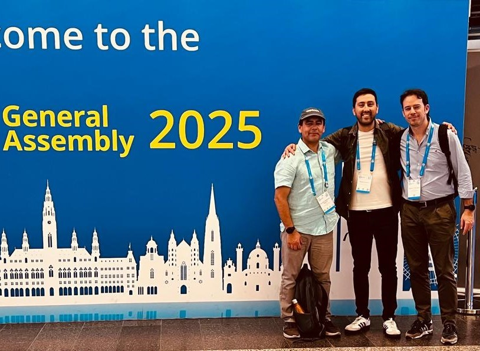
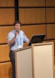
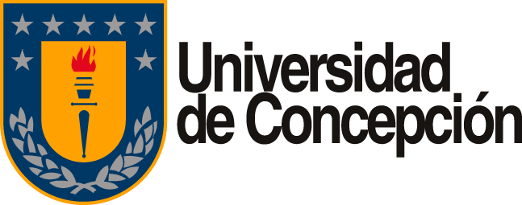
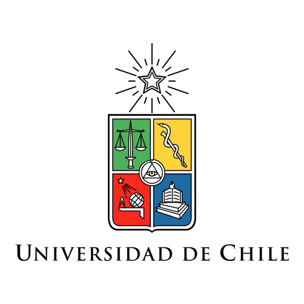
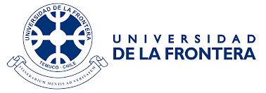
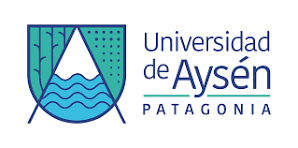
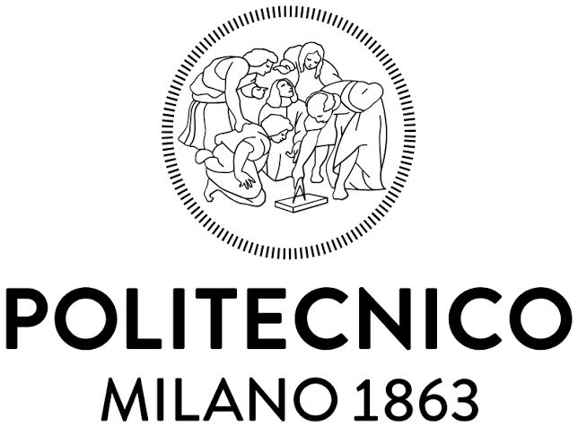
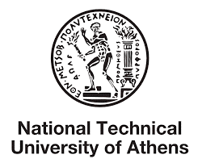

Students
Students
1
Current Students
MSc Student
Mentoring future researchers and building international scientific collaborations.
I am committed to training the next generation of engineers and researchers through thesis supervision, academic partnerships and collaborative research in hydrology and hydraulic engineering. Together, we address real-world water challenges with scientific rigor and a global perspective.

MSc Student

MSc and BSc

Chile, Italy & Greece

Universities & Research Centers
Collaborations connect universities, research centers and international partners across hydrology, hydraulic modelling, remote sensing and open science.
Full Professor
University of Tuscia
Department of DIBAF
Italy
Professor Emeritus
National Technical University of Athens
Greece
Associate Professor
University of Basilicata
Italy
Associate Professor
Universidad de La Frontera
Chile
Full Professor
Universidad de Concepción
Chile

Associate Professor
Universidad de Concepción
Chile
Associate Professor
Universidad de Chile
Chile
Full Professor
Universidad de los Andes
Chile
Doctoral Researcher
WSL Institute for Snow and Avalanche Research SLF
ETH Zurich
Chile
Full Professor
University of Naples Federico II
Italy
Senior Lecturer in Physical Geography
Newcastle University
United Kingdom
Civil Engineer and Researcher
National Technical University of Athens
Greece
Senior Researcher and Laboratory Teaching Staff
National Technical University of Athens
Greece
Professor of Structural Engineering
University of Strathclyde
United Kingdom
No collaborators match this filter.
Graduate students working on research projects in hydrology, hydraulic engineering, flood risk and water resources.
MSc Student
Universidad Diego Portales
MSc Graduate
Universidad Diego Portales

BSc Graduate
Universidad Diego Portales
BSc Graduate
Universidad Diego Portales
BSc Graduate
Universidad Diego Portales
BSc Graduate
Universidad Diego Portales
BSc Graduate
Universidad Diego Portales
BSc Graduate
Universidad Diego Portales
BSc Graduate
Universidad Diego Portales
BSc Graduate
Universidad Diego Portales
BSc Graduate
Universidad Diego Portales
BSc Graduate
Universidad Diego Portales

Universidad de ConcepciónChile
Universidad de ChileChile
Universidad de la FronteraChile
Universidad de AysénChile
Politecnico di MilanoItaly
National Technical University of AthensGreece
I am always open to motivated students and collaborators.
Let's
explore how we can work together.
 Contact Me
Contact Me Schedule Meeting
Schedule Meeting